Coach
An adaptive fitness companion for training, nutrition and progress.
Coach helps users know what to do today, adapt their workout to the time they have, and keep training and nutrition in one simple experience.

Revisiting Coach
Too much product, not enough focus.
Coach started as an academic UX/UI project that tried to cover training, nutrition, progress, social features and community at once.
The redesign was less about adding and more about deciding what deserved attention.
| Area | 2024 | 2026 |
|---|---|---|
| Home | Calorie summary first | Next workout first |
| Navigation | Five tabs | Three tabs |
| Session length | Fixed estimate | 20, 32 or 45 min |
| Food logging | Full nutrition table | Quantity and macros |
| Colour | Neon yellow and pink | Yellow only for action |
TrainingNutritionSocialProgressCommunity
Train Eat Progress
- Today
What should I do today?
Research: clear routines and guidance. - Nutrition
How am I doing today?
Research: simple daily tracking. - Progress
How is my week going?
Research: visible signs of improvement.
Usability testing also showed friction in food logging, one of the flows simplified in the redesign.
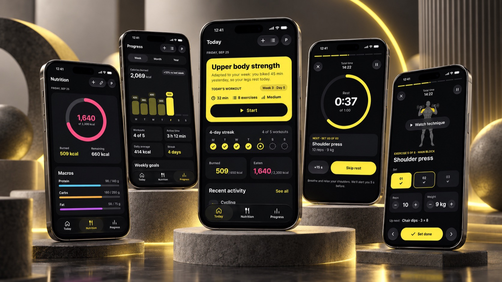
Onboarding
A plan built around the user.
Instead of generic programmes, Coach builds the starting plan from four practical inputs.
-
01 · Experience
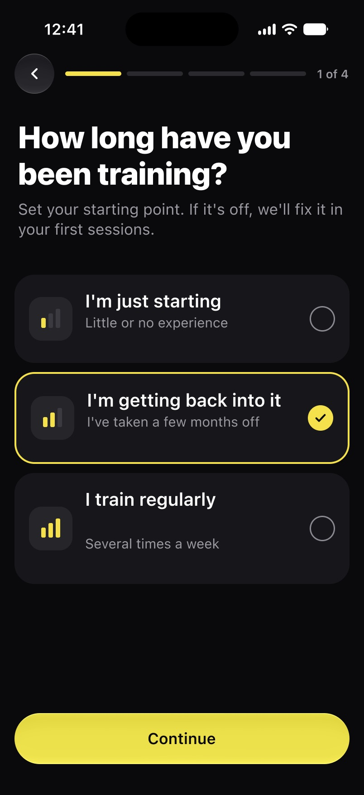
-
02 · Goal
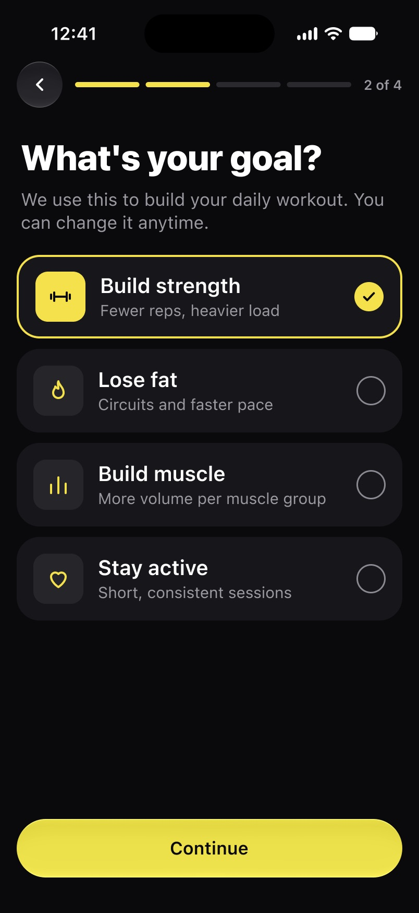
-
03 · Availability
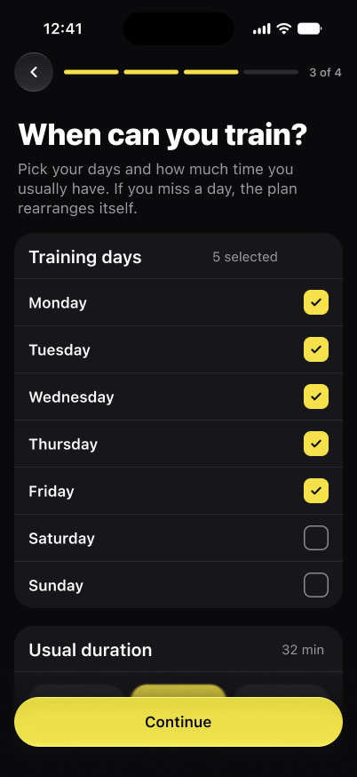
-
04 · Environment
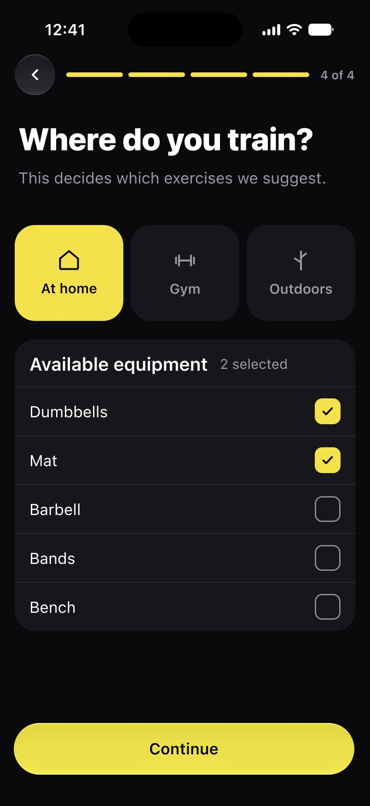
Apple Health is an optional extra, not a requirement.
The plan is only the starting point.
The first week is generated for the user, then changes with their schedule and feedback.
- Less time
- The session gets shorter.
- More effort
- The load can be adjusted.
- Missed day
- The week is reorganised.
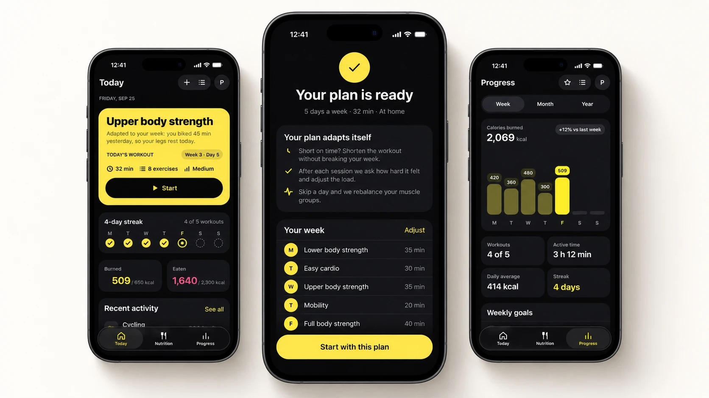
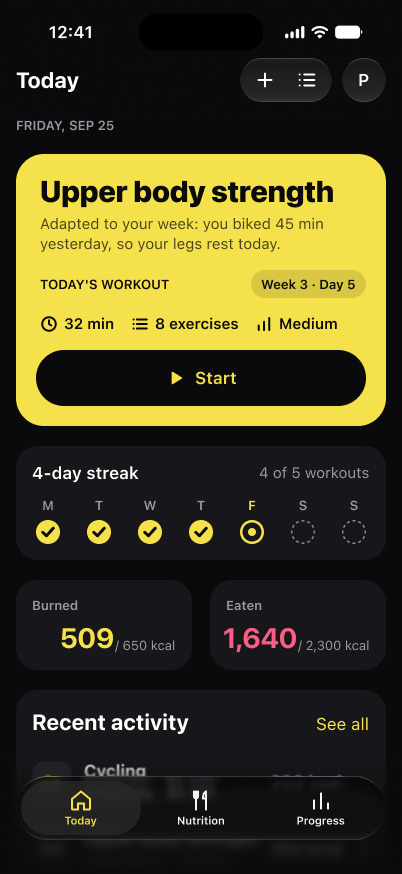
Today
One clear answer: what should I do today?
The home screen leads with the next workout and why Coach chose it, instead of every metric at once.
- 32 min
- 8 exercises
- Medium intensity
“Adapted to your week: you biked 45 min yesterday, so your legs rest today.”
Workout overview
The workout adapts to the time available.
A 45-minute plan is useless when the user only has 20. Before starting, the session can be shortened or extended without losing its focus.
203245min
Missing the perfect workout should not mean missing the workout entirely.
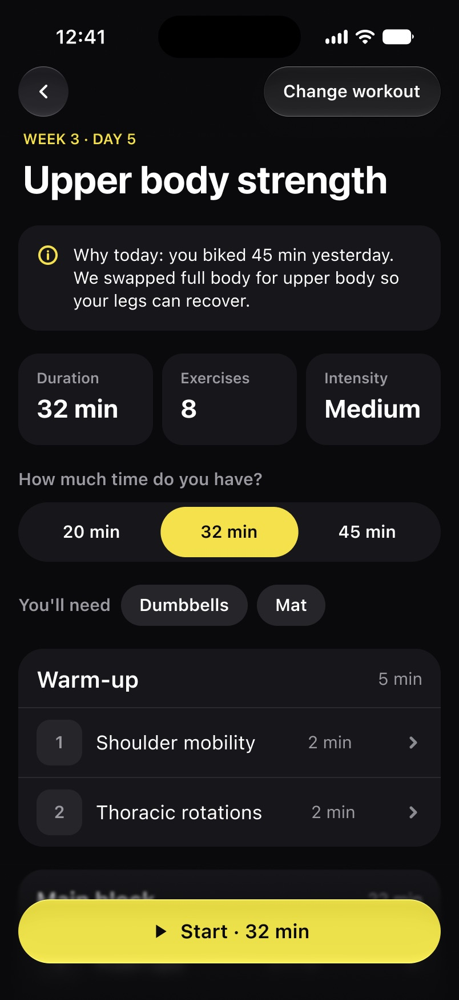
Active workout
Less interface when attention matters most.
During a set, the screen keeps only what the exercise needs: sets, reps, load and what comes next.
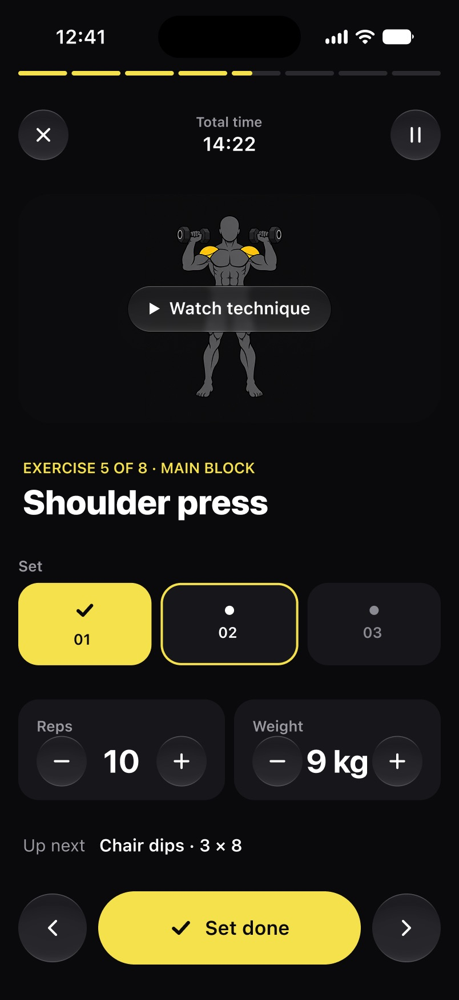
- Set02
- Reps10
- Weight9 kg
- ActionSet done
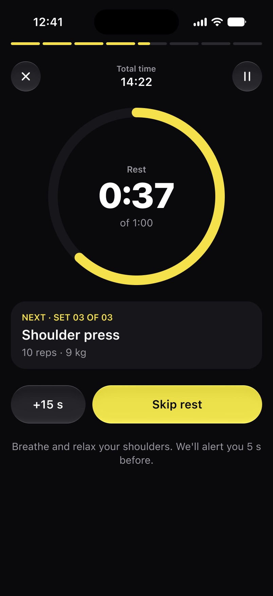
The plan learns from the session.
Users rate how each session felt, and that rating shapes the next one. Stopping early saves the session and rebalances the week.
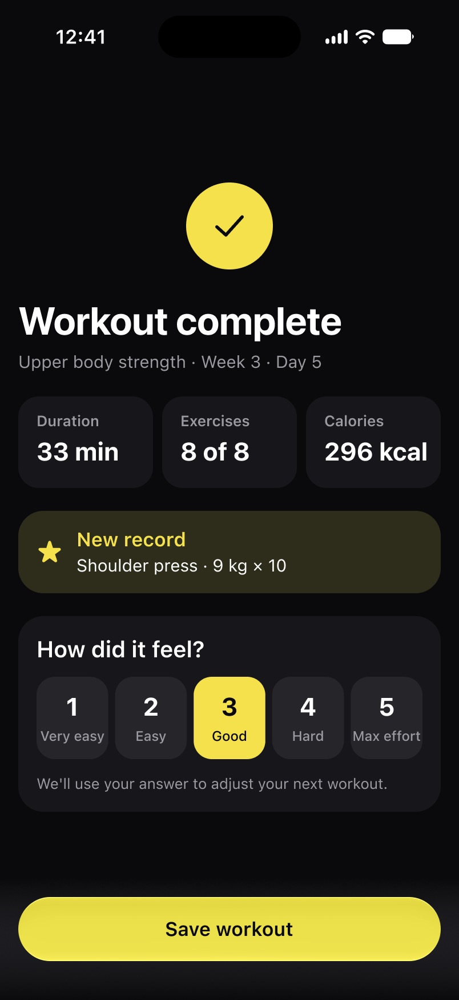
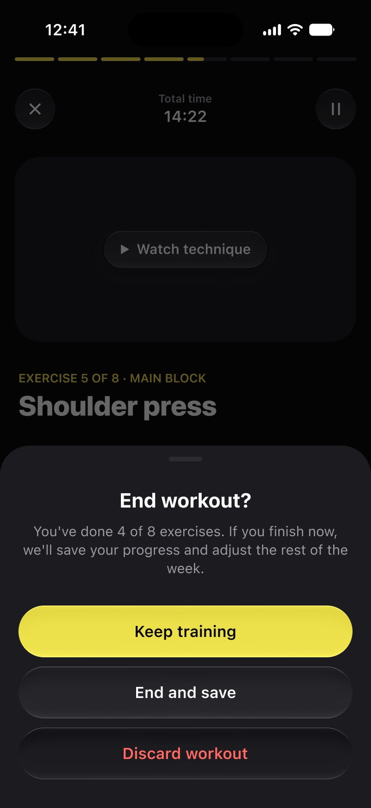
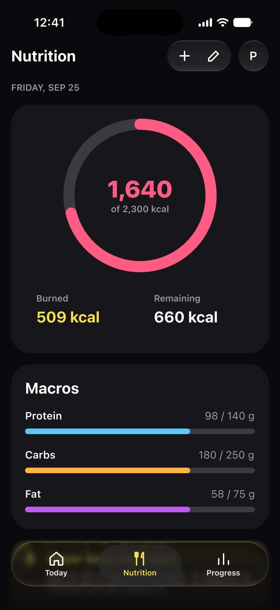
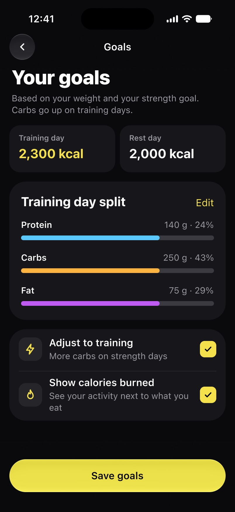
Nutrition
Nutrition without turning Coach into a calorie database.
The redesign keeps what users check most: daily calories, macros and meals. Goals follow the plan too, with more calories and carbs on training days.
1,640 / 2,300 kcal
- Protein
- Carbs
- Fat
- Meals
Upper body day today“You're 42 g short on protein. A salmon or chicken dinner covers it.”
Food logging
Reducing friction in food logging.
Food logging was one of the least intuitive flows in the original usability test. The redesign cuts the decisions needed to add something.
Search→Select→Quantity→Add
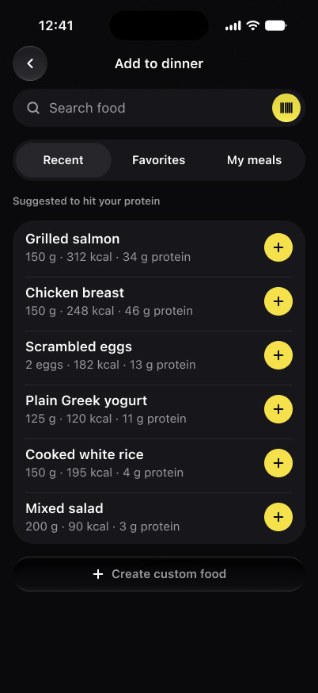
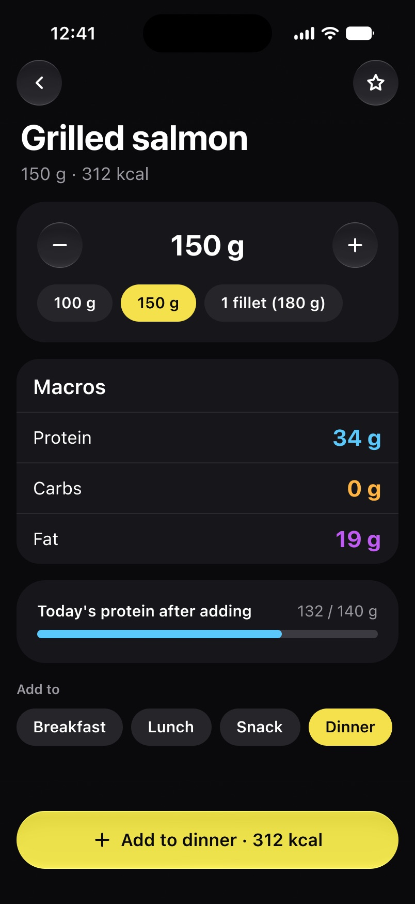
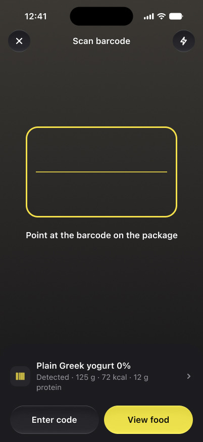
Progress
A weekly view of effort and consistency.
Calories burned lead the week. Workouts, active time, daily average and streak add the context.
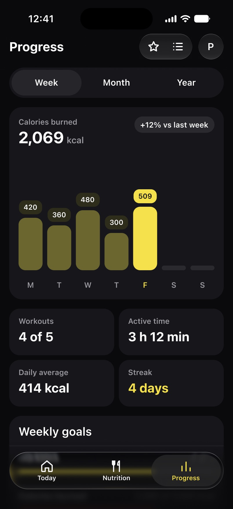
Design system
Built for focus.
A restrained dark palette, with yellow reserved for action, selection and progress. Nutrition adds colour only where it separates metrics.
- bg/base#0A0A0B
- bg/elevated#17171A
- accent#F5E14B
- energy#FF5C85
- macro/protein#5AC8FA
- macro/carbs#FFB340
- macro/fat#BF5AF2
- Type
- SF Pro · 18 text styles
- Spacing
- 4 to 40 pt · 8 steps
- Radius
- 12 · 18 · 22 · 28 · full
- Library
- 18 components · 25 icons
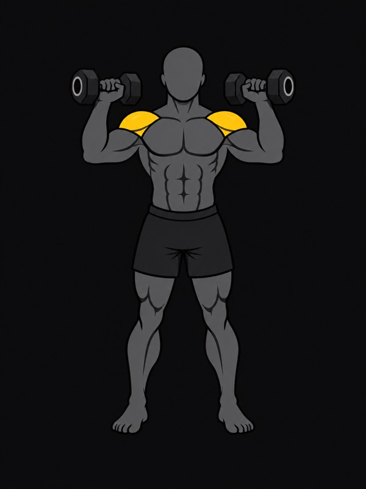
2024 → 2026
Before / after.
A clearer hierarchy, a stronger visual system and a more focused everyday experience.
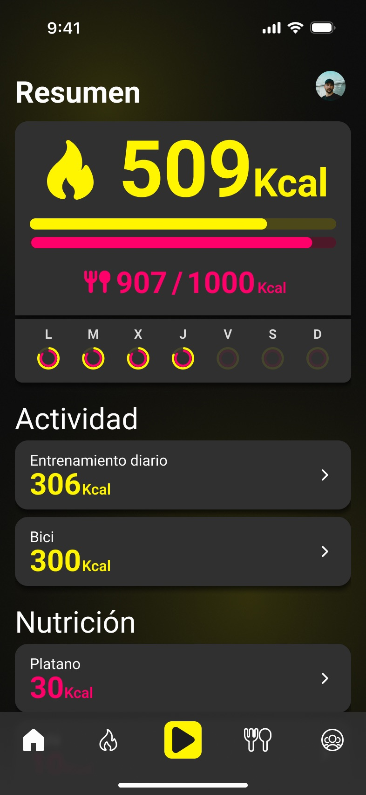
Coach
Train around real life.
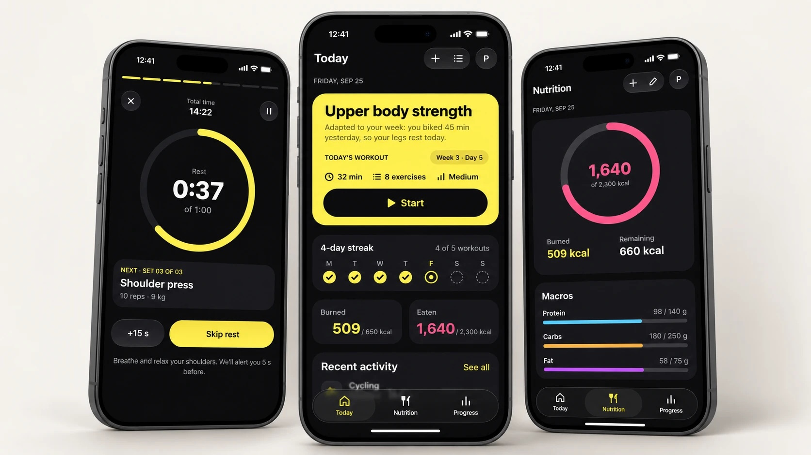
Playground →